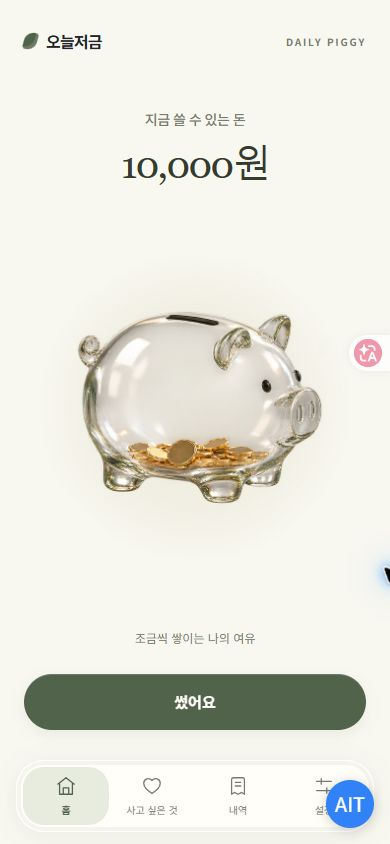

← 모든 앱 보기BUDGET & LITTLE JOYS / 토스 미니앱 · 출시오늘의 소비에,
오늘의 소비에,
작은 여유를.
하루 자유 예산을 정하고, 쓴 만큼 기록하세요. 가상의 저금통에 쌓이는 잔액을 보며 지금 쓸 수 있는 돈과 원하는 목표를 함께 살펴봅니다.
토스 미니앱으로 출시되었습니다.
실제 돈의 입금·보관·이체가 아닌 가상 예산 관리 도구입니다.

이런 순간을 돕습니다.
01
하루 예산을 차곡차곡
하루 자유 예산을 설정하면 날짜가 지날 때마다 가상 잔액에 반영됩니다. 다시 열었을 때도 경과한 날짜를 정산합니다.
02
쓴 만큼 간단히 기록
소비를 직접 기록하고 수정하거나 삭제할 수 있습니다. 잔액을 넘는 소비는 확인 과정을 거칩니다.
03
눈에 보이는 여유
잔액에 따라 유리 저금통 안의 동전이 달라집니다. 사고 싶은 것의 목표 금액과 진행 상황도 확인합니다.
이렇게 사용합니다.
- 하루 자유 예산을 정합니다.
- 소비한 금액을 직접 기록합니다.
- 남은 잔액과 목표를 확인합니다.
알아두세요
오늘저금의 잔액과 동전은 사용자가 입력한 예산·소비를 바탕으로 표시하는 가상 기록입니다. 실제 금융 계좌의 잔액과 다릅니다.
계좌번호·카드번호·금융거래 내역을 수집하지 않습니다. 앱 이용 관련 문의는 아래 이메일로 보내주세요.